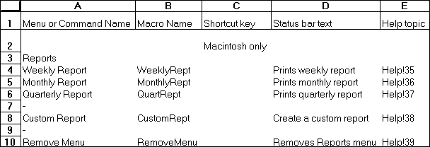

Requests an array of a specific type of information from an application with which you have a dynamic data exchange (DDE) link. Use REQUEST with other Microsoft Excel DDE functions to move information from another application into Microsoft Excel.
Syntax
REQUEST(channel_num, item_text)
Important Microsoft Excel for the Macintosh requires system software version 7.0 or later for this function.
Channel_num is a number returned by a previously run INITIATE function. Channel_num refers to a channel through which Microsoft Excel communicates with another program.
Item_text is a code indicating the type of information you want to request from another application. The form of item_text depends on the application connected to channel_num.
REQUEST returns the data as an array. For example, suppose the remote data to be returned came from a sheet that looked like the following illustration.

REQUEST would return that data as the following array:
{1, 2, 3;4, 5, 6}
If REQUEST is not successful, it returns the following error values.
|
|
|
|
|
|
|
|
|
|
Tip Use the ERROR.TYPE function to distinguish between the different error values.
Example
Suppose you had opened a DDE channel to Microsoft Word for Windows. WChan contains the number of the open channel. In Microsoft Excel for Windows, the following function returns the text specified by the bookmark named BMK1.
=REQUEST(WChan, "BMK1")
Related Functions
EXECUTE Carries out a command in another application
INITIATE Opens a channel to another application
POKE Sends data to another application
SEND.KEYS Sends a key sequence to another application
TERMINATE Closes a dynamic data exchange (DDE) channel previously opened with the INITIATE function
Return to index